m = makemeshoninterval(0, 4, 20)
mplot(m) |> mconf()
This chapter is utterly incomplete and probably not worth reading.
m = makemeshoninterval(0, 4, 20)
mplot(m) |> mconf()
Nodes hidden if too many.
m = makemeshoninterval(0, 4, 60)
mplot(m) |> mconf()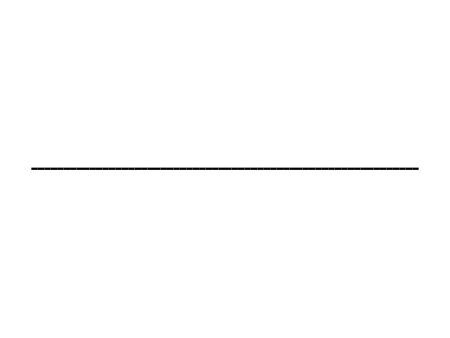
One value per node
mplot(m, -1.1 .+ 2.6 * rand(nnodes(m))) |> mconf()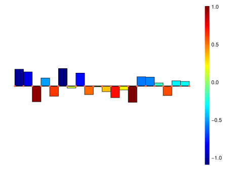
One value per element
mplot(m, -1.1 .+ 2.2 * rand(nedges(m))) |> mconf()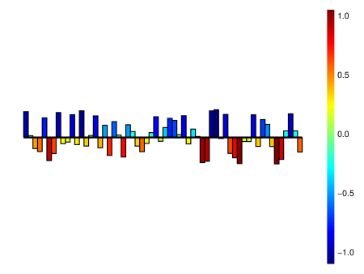
Two values per element
mplot(m, -1.1 .+ 2.2 * rand(2, nedges(m))) |> mconf()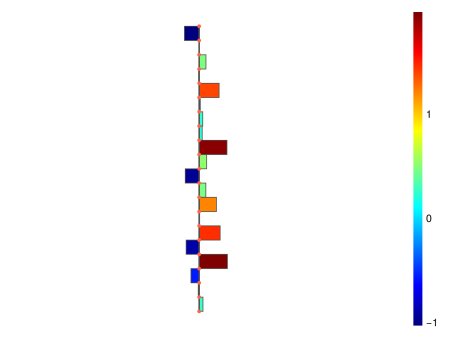
m = makemeshoninterval(π, 3π, 20, t -> [0; t])
mplot(m, -1.1 .+ 3.2 * rand(nedges(m))) |> mconf()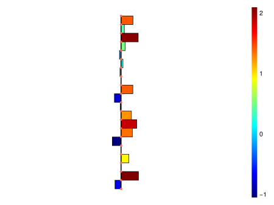
m = makemeshoninterval(π, 3π, 20, t -> t * [cos(t); sin(t)])
mplot(m, -1.1 .+ 3.2 * rand(2, nedges(m))) |> mconf()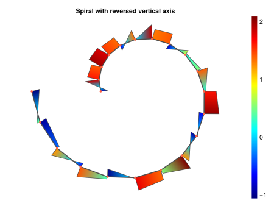
Plot customization works like this:
f, ax = mplot(m, -1.1 .+ 3.2 * rand(2, nedges(m))) |> mconf()
ax.title = "Spiral with reversed vertical axis"
ax.yreversed = true
f
Documentation on plot axis can be found on the Makie documentation which unfortunately is quite hard to read.
a = 80
m = makemeshonrectangle(9.0, 4.5, 2a, a)
println("Number of nodes is Nn = ", (a + 1) * (2a + 1))
print("Links...")
@time l12 = links(m.topology, 1, 2);Number of nodes is Nn = 13041
Links... 0.089022 seconds (1.11 M allocations: 86.500 MiB, 33.05% gc time, 14.93% compilation time)Default color
mplot(m, edgesvisible=true, edgecolor=:hotpink) |> mconf()
Colors for nodes
mplot(m, 4.1 * (rand(nnodes(m)) .- 0.25)) |> mconf()
Colors for elements
mplot(m, 4.1 * (rand(nfaces(m)) .- 0.25)) |> mconf()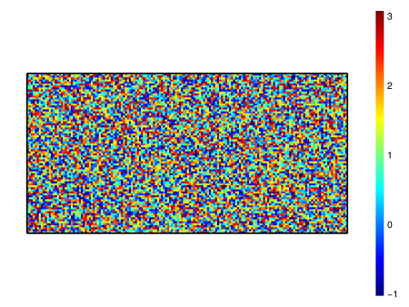
a = 20
m = makemeshonrectangle(9.0, 4.5, 2a, a, TRIANGLE)
println("Nn = ", (a + 1) * (2a + 1))
print("Links (1, 2):")
@time l12 = links(m.topology, 1, 2);Nn = 861
Links (1, 2): 0.004111 seconds (101.71 k allocations: 8.227 MiB)Default color
mplot(m, edgesvisible=true) |> mconf()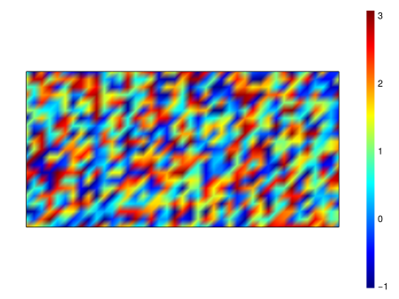
Colors for nodes
mplot(m, 4.1 * (rand(nnodes(m)) .- 0.25)) |> mconf()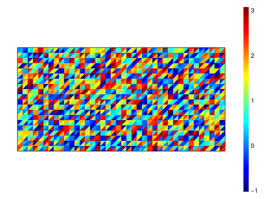
Colors for elements
mplot(m, 4.1 * (rand(nfaces(m)) .- 0.25)) |> mconf()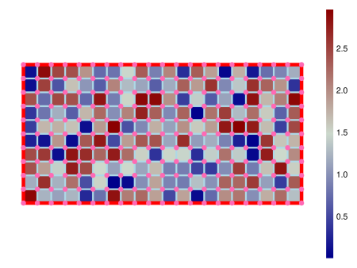
cm.set_theme!(cm.theme_minimal())
m = makemeshoninterval(π, 3π, 20, t -> t * [cos(t); sin(t)])
# cm.with_theme(cm.theme_dark()) do
# cm.update_theme!(xxx=:blue)
# cm.update_theme!(markercolor=:tomato)
cm.update_theme!(Axis=(leftspinevisible=false,))
#println(cm.theme(:markercolor)[])
mplot(m, edgecolor = :green)
#cm.scatter(coordinates(m))
#end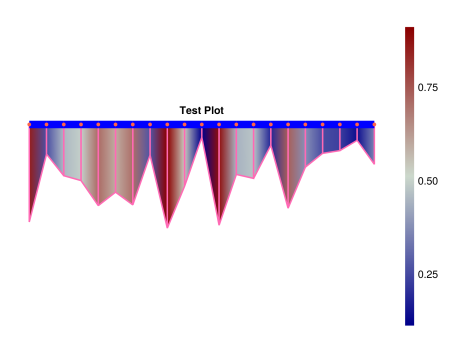
a = 10
m1 = makemeshonrectangle(4, 2, 2a, a)
mplot(m1, 3 * rand(nfaces(m1)),
nodesvisible=true, nodecolor=:hotpink, nodesize=12,
edgesvisible=true, edgecolor=:lightblue, edgelinewidth=3,
featureedgecolor=:red, featureedgelinewidth=6,
facecolormap=:bluesreds
) |> mconf()
m2 = makemeshoninterval(0, 4, 20)
mplot(m2, rand(nnodes(m2)),
lineplotoutlinesvisible=true,
edgecolor=:blue, edgelinewidth=10,
lineplotscale=0.3,
lineplotoutlinescolor=:hotpink,
lineplotoutlineslinewidth=2.0,
lineplotfacescolormap=:bluesreds
) |> mconf(title="Test Plot")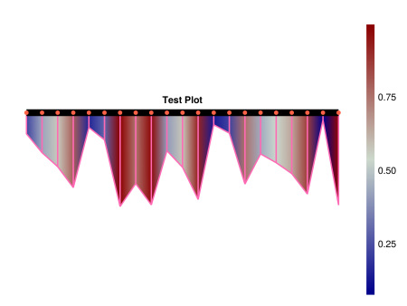
X1 = 0:1/4:1
L1 = lagrangepolynomials(X1, 0 .. 1)
W1 = [integrate(L, 0 .. 1) for L in L1]
X2 = [0, 0.253124, 0.4986745, 0.75834, 1]
L2 = lagrangepolynomials(X2, 0 .. 1)
W2 = [integrate(L, 0 .. 1) for L in L2]
function nint(f, a, b)
w = b - a
y1 = f.(a .+ w * X1)
y2 = f.(a .+ w * X2)
w * dot(W1, y1), w * dot(W2, y2)
end
println(nint(x -> x, 0, 2))
println(nint(sin, 0, pi))
println(nint(sin, pi, 2pi))(1.999999999999996, 1.999999999999985)
(1.9985707318238337, 1.9986169017000417)
(-1.9985707318238337, -1.998616901700041)function doplot(xy)
x, y = xy
f = cm.lines(x, y)
cm.scatter!(x, y, color=:darkred, markersize=5)
return f
end
function convergence(f, a, b, n)
h = 1
X = X2
W = W2
e = zeros(n)
for i in 1:n
w = b - a
x = a .+ w * X
y = f.(x)
e[i] = approximationerror(h, X, W, y)
b = (a + b) / 2
h /= 2
end
return e
endconvergence (generic function with 1 method)n = 5
(1:n, convergence(x -> 100x^3, -0.25, 1.5, n)) |> doplot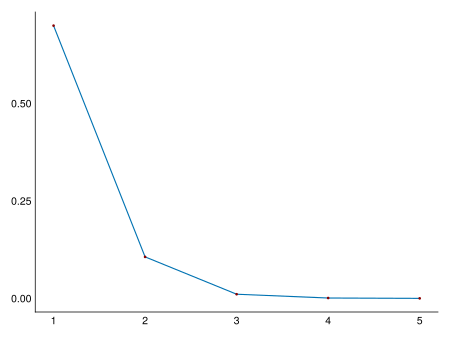
(1:n, convergence(sin, 0, pi, n)) |> doplot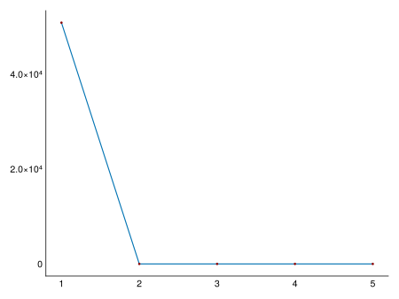
(1:n, convergence(x -> 1 / x, -1, 1e-5, n)) |> doplotn = 20
(1:n, convergence(x -> sin(1 / x), 1e-5, 1e-1, n)) |> doplot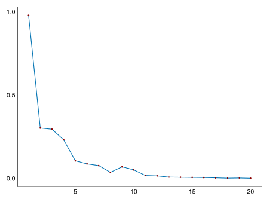
sampleadaptive(x -> x^100, 0, 1) |> doplot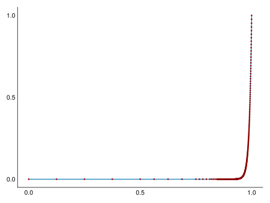
sampleadaptive(x -> sin(1.0 / x), 0, 0.05, level=14) |> doplot
sampleadaptive(x -> 1 / x, -1, 1) |> doplot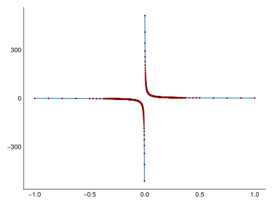
sampleadaptive(x -> (-0.3 + x), -1, 1, ir=true) |> doplot
sampleadaptive(x -> x^2, -1, 1) |> doplot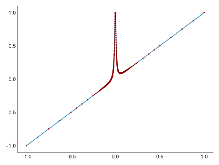